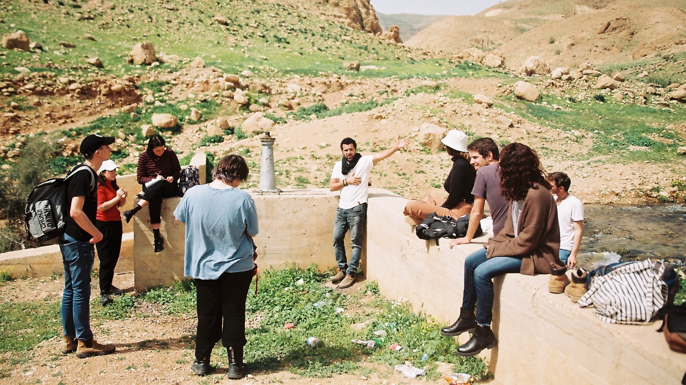
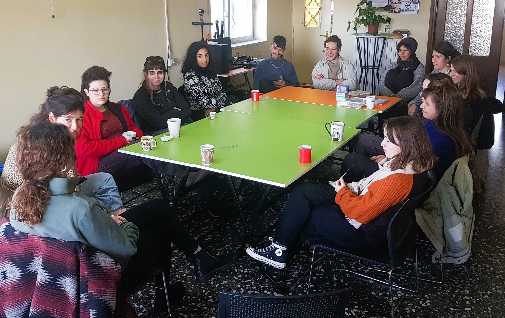

סמינר אביב - מקוצר
צלילה ממוקדת לסוגיות הליבה של הסכסוך בשלושה סופי שבוע אינטנסיביים של למידה, מפגשים וסדנאות
עומק בזמן קצר
אנחנו מבינים שלפעמים לוח הזמנים צפוף, אבל הרצון להבין לעומק את המציאות המורכבת סביבנו חזק מתמיד. סמינר האביב המקוצר נבנה במיוחד עבור אלו שמחפשים את הדיוק, את המפגש הישיר ואת התובנות המשמעותיות ביותר בפורמט מרוכז.
- check_circle מרצים מובילים ומומחים בתחומם
- check_circle סיורי שטח במוקדי החיכוך המרכזיים
- check_circle קבוצת למידה אינטימית ושיח פתוח

מוקדי הלמידה
עובדות בשטח
הכרות מעמיקה עם הגיאוגרפיה, הדמוגרפיה וההיסטוריה המעצבת את המציאות היומיומית בירושלים ויהודה ושומרון.
מפגש ועדות
שיחות פנים אל פנים עם דמויות מפתח, עדים לאירועים היסטוריים וקולות מגוונים בחברה הישראלית.
כלים לשינוי
סדנאות מעשיות לפיתוח חשיבה ביקורתית, כלים לדיאלוג והבנת האפשרויות לעשייה חברתית וחינוכית.
פרטים לוגיסטיים
מוכנים לצאת לדרך?
מספר המקומות מוגבל על מנת לשמור על איכות הלמידה והשיח. הבטיחו את מקומכם בסמינר האביב.